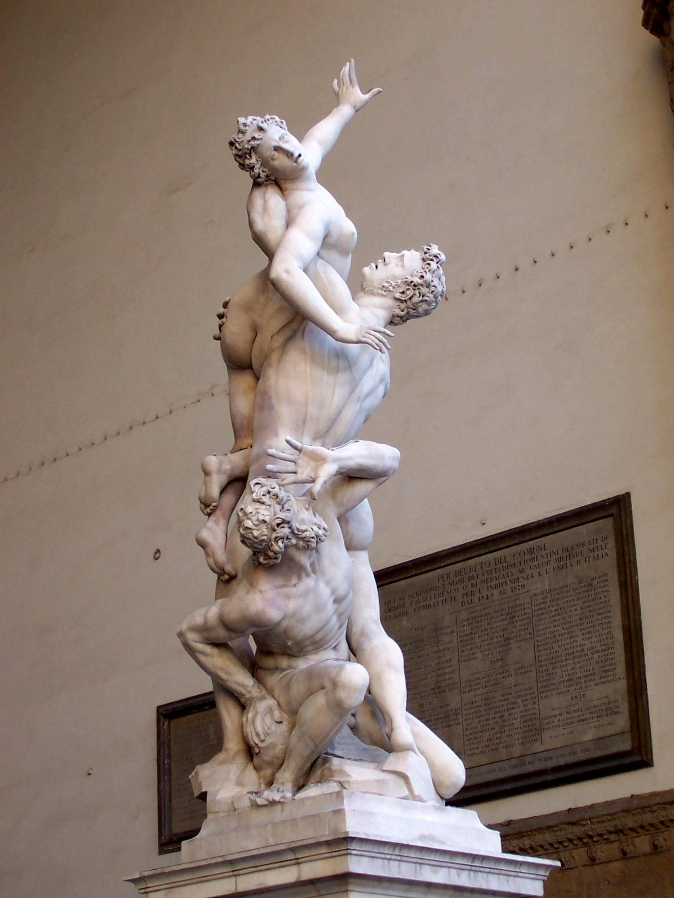
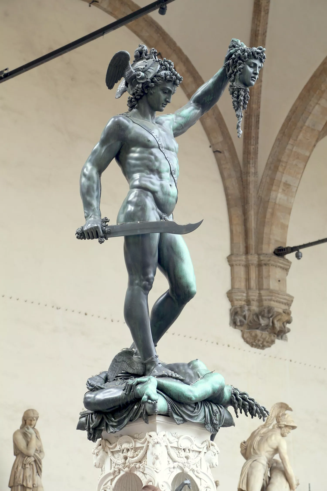
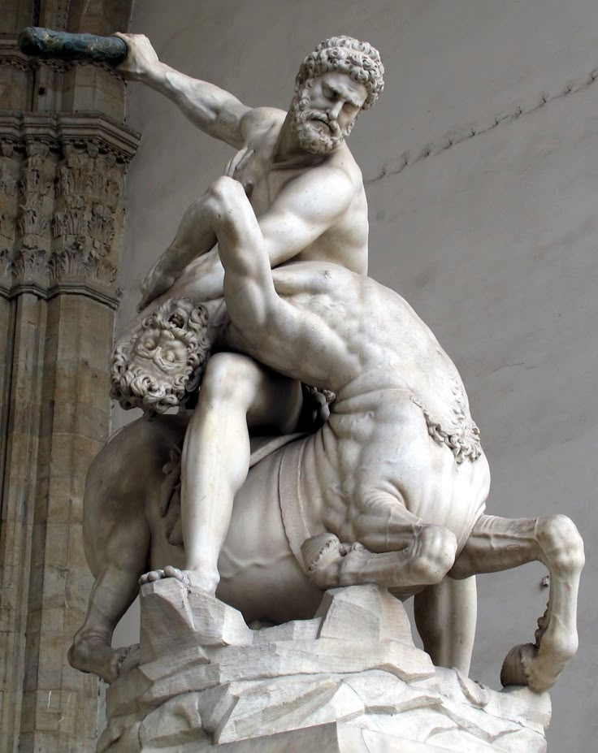

Florència
Loggia dei Lanzi
üóø Fitxa d'Escultures de la Loggia dei Lanzi (Piazza della Signoria)
La Loggia dei Lanzi és una autèntica galeria d'art a l'aire lliure, amb escultures renaixentistes i clàssiques de gran força simbòlica. Aquí tens una fitxa resum de les més destacades:
- Rapte de les Sabines – Giambologna (1583)
Escena dramàtica amb tres figures entrellaçades en moviment. Simbolitza el rapte mític de dones sabines pels romans.
 - Perseu amb el cap de Medusa – Cellini (1554)
Perseu mostra el cap de Medusa acabada de decapitar. Obra en bronze d'estil teatral i expressiu.
 - Hèrcules i el Centaure Nesso – Giambologna (1599)
Escena de força i lluita entre l'heroi i el centaure, símbol del triomf sobre la barbàrie.
 - Menelao amb el cos de Patrocle – Còpia romana
Representació emotiva de la mort d’un heroi grec en braços del seu company.